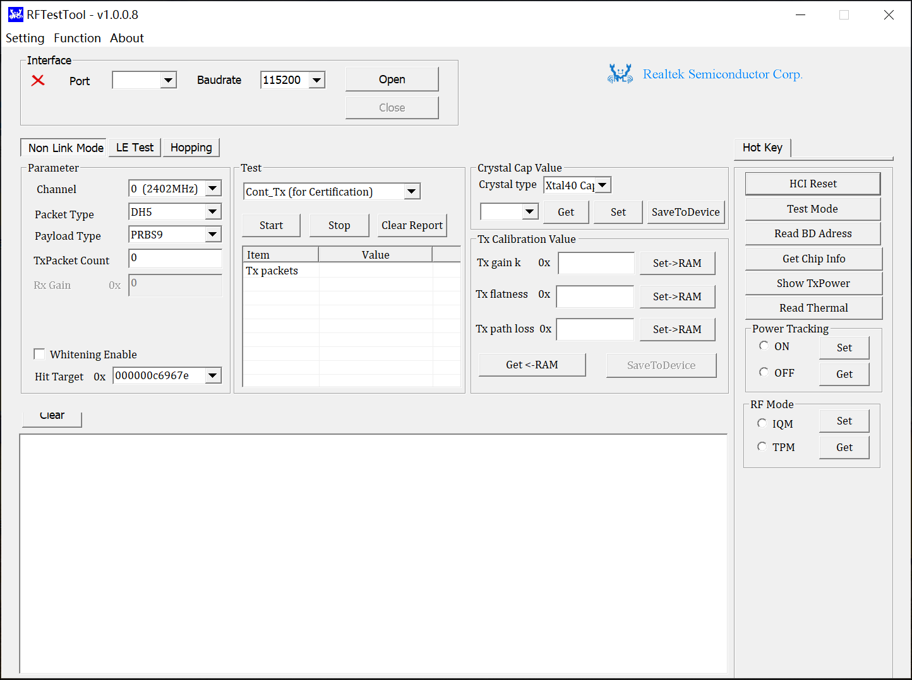
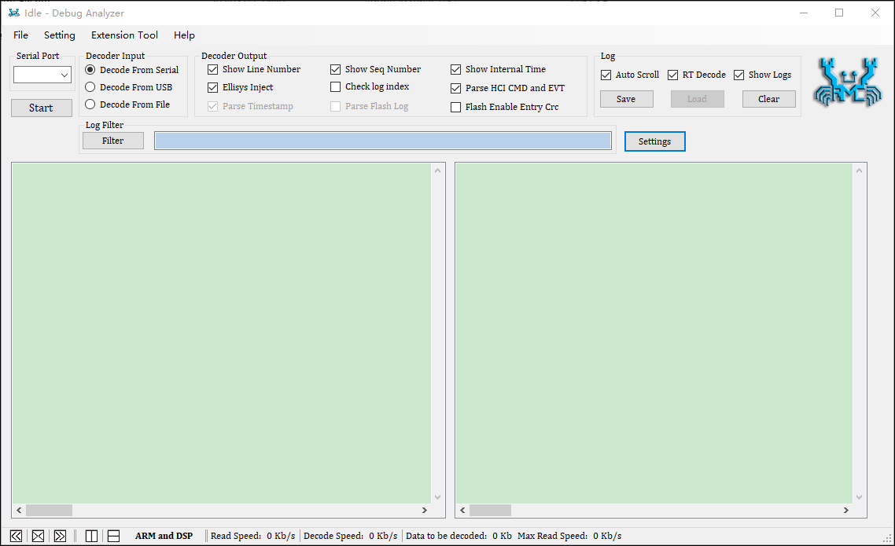

工具
除了芯片系统（SoC）固有的能力外，Realtek 还提供了一整套工具，以满足扩展功能开发、用户应用程序创建和大规模生产过程。
以下是工具的简要说明：
文件名称 |
说明 |
路径 |
|---|---|---|
用于研发调试或批量生产 |
|
|
MP Tool 的命令行版本，用于研发调试或批量生产 |
|
|
|
||
用于生成 |
|
|
用于系统日志分析和调试 |
|
|
用于通过 USB 进行固件升级 |
||
用于通过 iOS 进行 OTA 升级 |
||
用于通过安卓进行 OTA 升级 |
MP Tool
MP Tool 支持调试模式和批量生产模式。
调试模式：为开发人员提供一个平台，用于调试和功能开发，主要包括：
下载 image
生成 APP Config、System Config File
擦除 flash
读回 flash
批量生产模式：提供一系列功能，包括能够同时支持多达8个设备 flash 的下载和修改设备的蓝牙地址。
MP Tool 集成了打包和 Flash Map 生成功能。关于这些功能的详细说明，请参考每个工具目录中提供的用户指南。 MP Tool 套件和说明文档，请前往 RealMCU 平台获取。

MP Tool 主界面
MPCli
MPCli 是 MP Tool 的命令行版本，支持在 Windows/Linux/MacOS 系统上使用。MPCli 的主要功能有：
下载 image
修改 MAC 地址、校准 XTAL 内部电容、调整发射功率
读回 EUID 和 MAC 地址
擦除 flash
烧录 eFuse
MPCli 和说明文档，请前往 RealMCU 平台获取。
MP Pack Tool
MP Pack Tool 用于合并子文件并生成用于批量生产（MP）、空中下载更新（OTA）或组件固件更新（CFU）等操作的统一数据包文件。 MP Pack Tool 和说明文档，请前往 RealMCU 平台获取。

MP Pack Tool 主界面
Flash Map Generate Tool
Flash Map Generate Tool 提供以下功能：
生成
flashmap.h和flashmap.ini文件。创建 OTA 所需的头文件。
Flash Map Generate Tool 和说明文档，集成在 MP Tool 套件中，请前往 RealMCU 平台获取。

Flash Map Generate Tool 主界面
RF Test Tool
RF Test Tool 提供以下功能：
RF Test Tool 和说明文档，请前往 RealMCU 平台获取。
{kind=link}

RF Test Tool 主界面
Debug Analyzer Tool
Debug Analyzer Tool 旨在捕获和解码跨各种传输层的系统日志，增强调试过程。有以下关键特性：
支持多种输入方法：
二进制文件
保存和解析日志的能力。
生成蓝牙 snoop 日志，以便使用 Frontline 捕获工具进行深入分析。
支持 Ellisys 注入。
Debug Analyzer Tool 和说明文档，请前往 RealMCU 平台获取。
{kind=link}

Debug Analyzer Tool 主界面
CFU Download Tool
CFU Download Tool 用于升级符合 CFU 协议的 Realtek 芯片的固件。
CFU Download Tool 和说明文档，请前往 RealMCU 平台获取。

CFU Download Tool 主界面
iOS OTA APP
iOS OTA APP 用于通过 iOS 升级 Realtek 芯片的固件。
iOS OTA APP 和说明文档，请前往 RealMCU 平台获取。

iOS OTA APP 主界面
Android OTA APP
Android OTA APP 用于通过安卓升级 Realtek 芯片的固件。
Android OTA APP 和说明文档，请前往 RealMCU 平台获取。

Android OTA APP 主界面